主灯决定形状
主灯放在人物前方偏一侧，大约 45 度，略高于眼睛。硬光勾出结构，软光抹平瑕疵；先选你要哪一种，再调强度。
主灯不是越亮越好。它要和背景、环境光形成关系。人脸比背景亮一档，通常就够把人物从环境里提出来。
三种 ratio
1:1 是平光，信息清楚，适合喜剧和教学；2:1 有立体感，最通用；4:1 阴影更重，适合悬疑、夜戏和人物秘密。
ratio 是主灯与补光的亮度差，不是“灯的数量”。没有补光时，用反光板或负补光（黑旗）把暗部压下去。
窗光 + 反光板
把人物放在窗边，让窗光从一侧进来；把白板或泡沫板放在另一侧，把阴影提一点。先拍一条，再决定要不要加黑旗。
不要一开始就买灯。窗光的颜色和方向已经很好，你只需要学会控制它的大小和反差。
DIAGRAM / RATIO
光比：1:1、2:1、4:1

图片说明：本页封面、图解与步骤图是编辑示意或结构图，不是本页实测照片，也不能当作器材测试证据；AI 辅助生成的图会在图注标出。判断器材或画面，以正文的测试条件与现场记录为准。